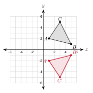
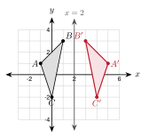
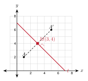
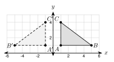
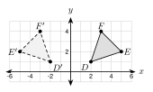
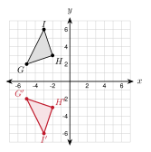
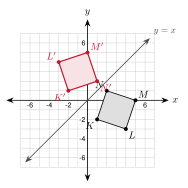

3.2 Reflections
- Reflect a point or a figure over the x-axis, the y-axis, and the lines y = x and y = −x
- Reflect a figure over a line like x = 2 or y = −1
- Find the line of reflection from a point and its image
- Tell what a reflection keeps the same and what it changes
Warm-Up
1. (3, 4)
2. 1 and −1
3. a = 7
3.2.1Reflecting Over the Axes
- Over the x-axis, the y-coordinate changes sign: (x, y) → (x, −y).
- Over the y-axis, the x-coordinate changes sign: (x, y) → (−x, y).
- Points on the line of reflection do not move.
Reflect P(3, −4) over the x-axis. Then reflect P over the y-axis.
Over the x-axis: (x, y) → (x, −y), so P′ = (3, 4).
Over the y-axis: (x, y) → (−x, y), so P′ = (−3, −4).

Graph the image of △ ABC over the x-axis. A(1, 2), B(5, 1), C(3, 5).
A′ = (1, −2)
B′ = (5, −1)
C′ = (3, −5)
a. Reflect Q(−5, 2) over the x-axis and over the y-axis.
x-axis: (−5, −2). y-axis: (5, 2).
b. R(4, −3) has image R′(−4, −3). Over which axis was it reflected? Write the rule.
The y-axis. (x, y) → (−x, y).
3.2.2Other Lines of Reflection
| Line of reflection | Rule |
|---|---|
| x-axis | (x, y) → (x, −y) |
| y-axis | (x, y) → (−x, y) |
| y = x | (x, y) → (y, x) |
| y = −x | (x, y) → (−y, −x) |
- For x = a or y = b: count how far the point is from the line. Go the same distance to the other side.
Reflect A(2, 5) over y = x. Reflect B(−3, 1) over y = −x.
A′ = (5, 2)
B′ = (−y, −x) = (−1, 3)

Reflect △ ABC over the line x = 2. A(−1, 1), B(1, 3), C(0, −2).
A is 3 units left of the line, so A′ is 3 units right: (5, 1).
B is 1 unit left, so B′ = (3, 3).
C is 2 units left, so C′ = (4, −2).
a. Reflect S(−2, −4) over the line y = −1.
S is 3 units below the line, so S′ is 3 units above: (−2, 2).
b. Reflect T(6, 3) over y = −x.
(−3, −6)
3.2.3Finding the Line of Reflection
- The line of reflection is the perpendicular bisector of AA'.
- It goes through the midpoint of AA'.
- It is perpendicular to AA'. The slopes multiply to −1.

A(1, 2) is reflected to A′(5, 6). Find the line of reflection.
Midpoint: (1 + 52, 2 + 62) = (3, 4)
Slope of AA': 6 − 25 − 1 = 1
Perpendicular slope: −1
The line has slope −1 and goes through (3, 4): y − 4 = −(x − 3), so y = −x + 7.
Midpoint: (1, 4). The slope of PP' is undefined (vertical), so the line is horizontal: y = 4.
3.2.4What a Reflection Keeps and Changes
- A reflection keeps every length and every angle the same.
- It reverses the orientation. Labels that go counterclockwise now go clockwise.
- A reflection is not a translation. You cannot make it by sliding.

△ ABC has A(1, 1), B(5, 1), C(1, 4). Reflect it over the y-axis to get A′(−1, 1), B′(−5, 1), C′(−1, 4).
AB = 4 and A′B′ = 4
AC = 3 and A′C′ = 3
BC = 5 and B′C′ = 5
Going A → B → C is counterclockwise. Going A′ → B′ → C′ is clockwise.
Both AB and A'B' are horizontal, so the slopes are equal (0). AC and A'C' are both vertical, so they are parallel. This works here because the line of reflection is vertical. In general, a side is not parallel to its image.
1. A reflection flips a figure over a line of reflection.
2. Over the x-axis, (x, y) → (x, −y). Over y = x, (x, y) → (y, x).
3. The line of reflection goes through the midpoint of AA' and is perpendicular to it.
4. A reflection keeps lengths and angles, but a counterclockwise figure becomes clockwise.
Practice
Use the figure for problems 1 to 4.

1. What is the line of reflection?
the y-axis
2. Name the image of E.
E′
3. Write the rule for the reflection.
(x, y) → (−x, y)
4. Find DE and D′E′. What do you notice?
DE = 9 + 1 = 10 and D′E′ = 10. They are equal.
Reflect each point over the line.
5. (4, −3) over the x-axis. (4, 3)
6. (−6, 2) over the y-axis. (6, 2)
7. (−1, −8) over the x-axis. (−1, 8)
8. (7, 0) over the y-axis. (−7, 0)
9. (3, 8) over the line y = x. (8, 3)
10. (−5, 2) over the line y = x. (2, −5)
11. (4, −6) over the line y = −x. (6, −4)
12. (−2, −3) over the line y = −x. (3, 2)
13. (1, 5) over the line x = 3. (5, 5)
14. (6, −2) over the line x = −1. (−8, −2)
15. (−3, 4) over the line y = 1. (−3, −2)
16. (2, 7) over the line y = −2. (2, −11)
Graph the image.

17. Reflect △ GHI over the x-axis. Give the image coordinates.
G′(−5, −2), H′(−2, −3), I′(−3, −6)
Graph the image.

18. Reflect KLMN over y = x. Give the image coordinates.
K′(−2, 1), L′(−3, 4), M′(0, 5), N′(1, 2)
Graph the image on your own grid.
19. Triangle UVW has U(1, −4), V(4, −2), W(2, −1). Reflect it over y = −x. Give the image coordinates.
U′(4, −1), V′(2, −4), W′(1, −2)

Find the line of reflection.
20. A(2, 1) reflects to A′(2, 9). y = 5
21. A(−3, 2) reflects to A′(5, 2). x = 1
22. A(0, 1) reflects to A′(4, 5). Use the midpoint and slope. y = −x + 5
Check what stays the same.
23. P(1, 2) and Q(5, 5) are reflected over the x-axis to P′(1, −2) and Q′(5, −5). Find PQ and P′Q′. Compare the slopes.
PQ = 5 and P′Q′ = 5. The slopes are 34 and −34. They are not equal, so PQ is not parallel to its image.
24. Triangle ABC has A(0, 0), B(4, 0), C(0, 3). Going A → B → C is counterclockwise. Reflect it over the x-axis. Which way does A′ → B′ → C′ go?
C′ = (0, −3). The path A′ → B′ → C′ goes clockwise. A reflection reverses orientation.
25. The point (2m, m + 3) is reflected over the y-axis. The image is (−8, 7). Find m.
−2m = −8, so m = 4. Check: 4 + 3 = 7.
26. The point (x + 4, 3x) is reflected over the x-axis. The image is (7, −9). Find x.
x + 4 = 7, so x = 3. Check: −3 · 3 = −9.
Real problems.
27. Which of these capital letters look the same after a reflection over a vertical line: A, B, F, H, M, R, T?
A, H, M, T
28. The top of a flagpole is 18 feet above a lake. How far below the water does its reflection seem to be?
18 feet. The water line is the line of reflection.
Find the mistake.
29. Esperanza reflects (3, −5) over the y-axis and writes (3, 5). What did she do wrong? What is the right answer?
She changed the sign of y. That is a reflection over the x-axis. Over the y-axis, change the sign of x: (−3, −5).
Test Practice
A. (7, −4) ← correct
B. (4, −7)
C. (−7, 4)
D. (−4, −7)
A. △ A′B′C′ is the same size and shape as △ ABC, but its labels go the opposite way around. ← correct
B. △ A′B′C′ is larger than △ ABC.
C. △ A′B′C′ has the same orientation as △ ABC.
D. Each side of △ A′B′C′ is parallel to its pre-image side.
Challenge
A′ = (1, −3). The line A′B has slope 86 = 43 and crosses the x-axis at x = 3.25. She touches the river at (3.25, 0). The path is A′B = 36 + 64 = 10.